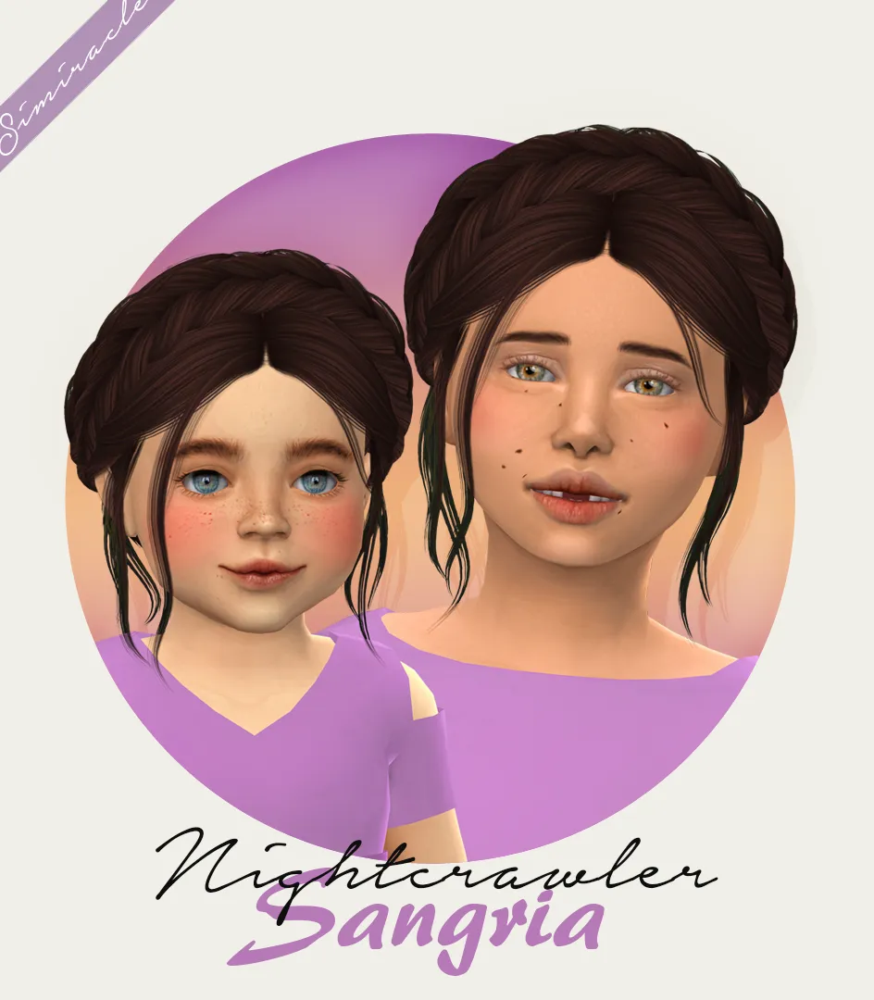
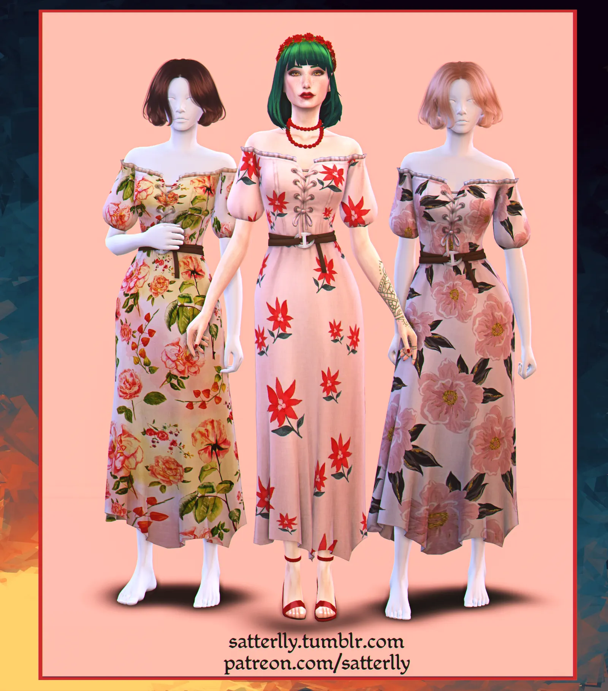

Kids Sim can Cook
par Cepzid in Petits mods
BEADIE
by simstrouble in Adults

Carmen Earrings
par Jolibean in Bijoux
Layered Vest - Kids Version
par Simiracle in Coats

Nightcrawler Sangria
par Simiracle in Kids
LeahLillith Nila - Kids Version
par Simiracle in Kids
Cathect Eyes
par Simiracle in Yeux
Birksche Edit Curly Long Middle Part Recolored
par Cubersims in Adults
Fifth Patron Gift
par Wistfulcastle in Full outfits
Advent Calendar, Day 19: Nene Tattoo
par Nekochansimmer in Tatooes

Summer Dress - Annette
par Satterlly in Dresses
Fortnite Jumpsuit Ripley Hair Conversi
par Bustedpixels in Adults
Groovy - A Wallpaper
par Pluto Sims in Mode construction
3Rd Date Collection - Monroe Dress
par BlueCraving in Dresses

Medieval Interface For The Sims 4 (July 27, 2024) [Public Version]
par Dskecht in Graphismes & Interface